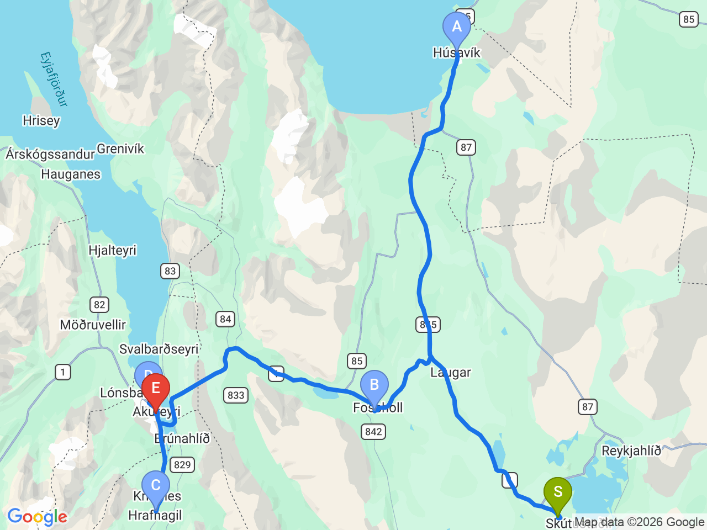

Day 12 · 2026-08-27（四）
冰島環島 Day 7/11
胡薩維克賞鯨・眾神瀑布・阿克雷里小鎮
前往「賞鯨之都」出海賞鯨，再沿途造訪眾神瀑布抵達北部大城阿克雷里

行程明細DAY 12
| 時間 | 地點 | 地點 (英文) | 價格 | 預計停留(分鐘) | 備註 |
|---|---|---|---|---|---|
| 08:30 | 飯店出發 | 前往胡薩維克，建議事先預約賞鯨行程 | |||
| 09:15 | 胡薩維克 | AHúsavík | 免費 | 180–240 | 冰島「賞鯨之都」，建議預約賞鯨行程（約 3 小時），港口周邊有餐廳、咖啡館及賞鯨博物館 |
| 13:35 | 眾神瀑布 | BGoðafoss Waterfall | 免費 | 45–60 | 冰島最著名瀑布之一，相傳西元 1000 年冰島改信基督教時，異教神像被投入瀑布，因此得名「眾神瀑布」 |
| 15:15 | 聖誕屋 | CChristmas House | 免費 | 30–45 | 冰島著名的聖誕主題商店，一年四季皆販售聖誕商品，戶外還有巨型聖誕裝飾與冰島聖誕精靈（Jólasveinar）展示 |
| 16:00 | Bónus 超市 | DBónus Supermarket, Akureyri | 免費 | 20–30 | 建議至阿克雷里（Akureyri）分店採買補給、零食及隔日早餐，是冰島價格較實惠的連鎖超市 |
| 16:40 | 抵達 K16 Apartment Check-in |
每日三餐
早餐
未安排
午餐
未安排
胡薩維克港口周邊解決，餐廳尚未確認
晚餐
未安排
阿克雷里市區解決，餐廳尚未確認
住宿資訊
本日預估開車里程
160km
Laxá Hótel → 胡薩維克 56km → 眾神瀑布 53km → 阿克雷里市區 45km → 市內移動 約6km（部分路段為概估）
該區域加油站
- N1 Húsavík賞鯨小鎮補給站
- N1 Hörgárbraut, Akureyri阿克雷里市區加油站